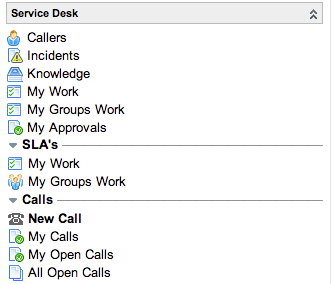

Using the Service Desk
| |
Note: This article applies to Fuji and earlier releases. For more current information, see Service Desk at http://docs.servicenow.com
The ServiceNow Wiki is no longer being updated. Visit http://docs.servicenow.com for the latest product documentation. |
1 Overview
ServiceNow provides a default homepage and a Service Desk application to provide a basic set of service desk functions. Both of these can be customized to suit the processes you are involved in and the needs of the organization.
2 ITIL Homepage
{kind=link}
The ITIL Homepage provides commonly used reports that give an overview of the processes you are involved in. Access the ITIL Homepage from the homepage icon ( ) in the banner.
) in the banner.
By default, the ITIL Homepage includes these reports:
- Users by location: a pie chart displaying users divided by location.
- Open Items by Escalation: tasks with an open state, grouped by escalation.
- My Groups Work: outstanding work for your group.
- My Work: your outstanding work.
- ITIL Summary Counts: tasks that are critical, overdue, and over a week old.
Because these reports link directly to the appropriate records and tables, you can use the work queues and the reports on critical tasks to manage your work directly from the homepage.
3 Menus and Modules
The Service Desk application includes these modules.
|  | The Service Desk application provides commonly used modules for managing service desk activities.
|
{kind=link}